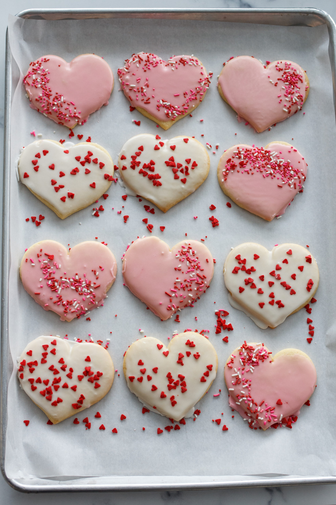

Cookie Recipe
Needed Ingridients:
- 1/2 cup butter (melted)
- 1/2 cup granulated sugar
- 1/4 cup brown sugar (packed)
- 2 teaspoons vanilla extract
- 1 large egg
- 1 ¾ cups all-purpose flour
- 1/2 teaspoon baking soda
- 1/2 teaspoon salt
- 1 cup semisweet chocolate chips
Instructions:
Preheat the Oven: Set to 350°F (175°C).
Melt Butter: Microwave butter for about 40 seconds until melted but not hot.
Mix Ingredients: In a large bowl, combine melted butter, granulated sugar, and brown sugar until well mixed. Add vanilla and egg, mixing until incorporated.
Combine Dry Ingredients: Stir in flour, baking soda, and salt until just combined. Be careful not to overmix.
Add Chocolate Chips: Fold in chocolate chips.
Scoop and Bake: Scoop dough (about 1.5 tablespoons each) onto a baking sheet, spaced 2 inches apart. Bake for 7-10 minutes until edges are set but centers are slightly underbaked.
Cool and Enjoy: Let cool on the baking sheet for a few minutes before transferring to a wire rack. To decorate them, use gel food coloring for decorating sugar cookies by dipping
cookies in a simple glaze for a smooth finish. This method is quick and can be enhanced with sprinkles or additional piping while the glaze is still wet.Extra tips: Ensure cookies
are completely cooled before decorating to prevent melting. Use gel food coloring for more vibrant hues without altering icing consistency. Allow decorated cookies to dry completely
before storing to maintain their appearance. And voilà! Your cookies are done!

Contact Information:
Youtube
Instagram
Pages:
Page 1